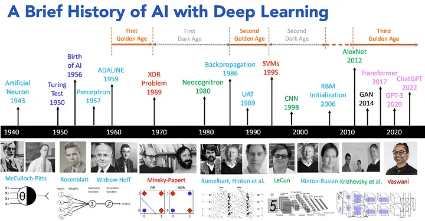
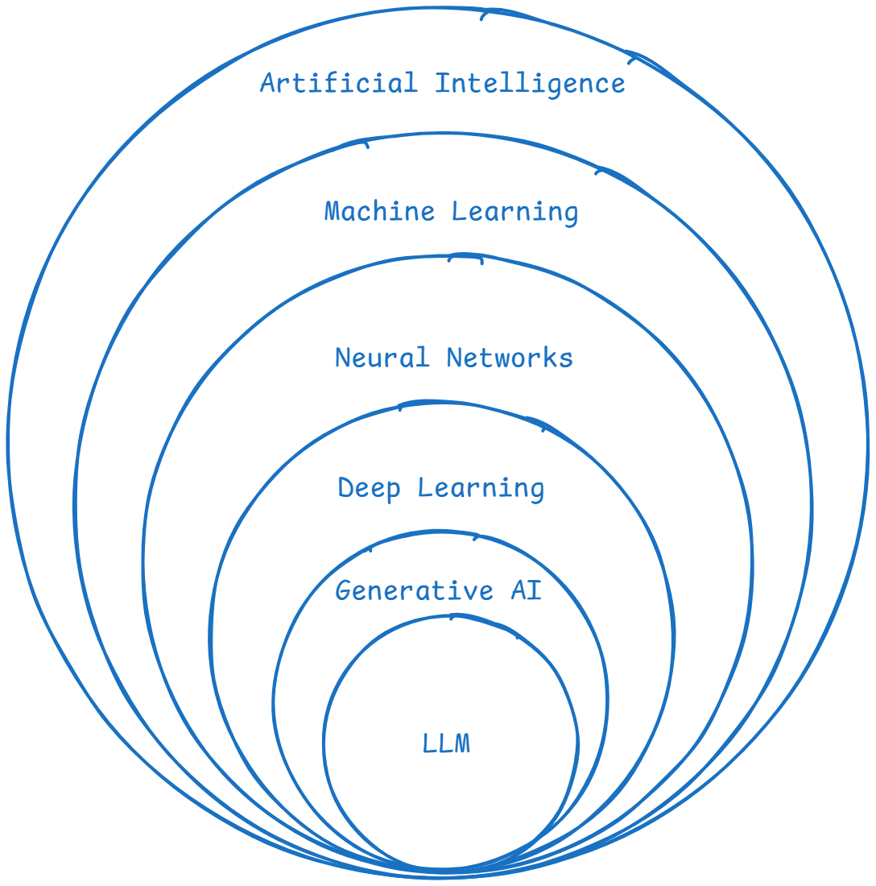
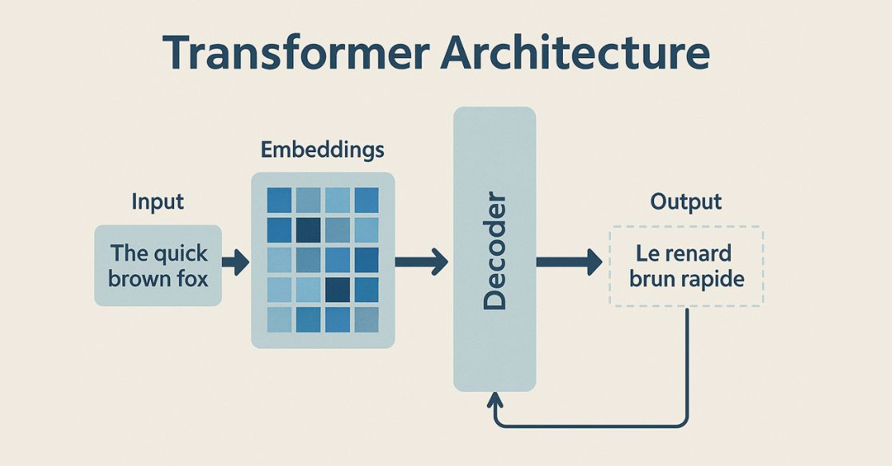
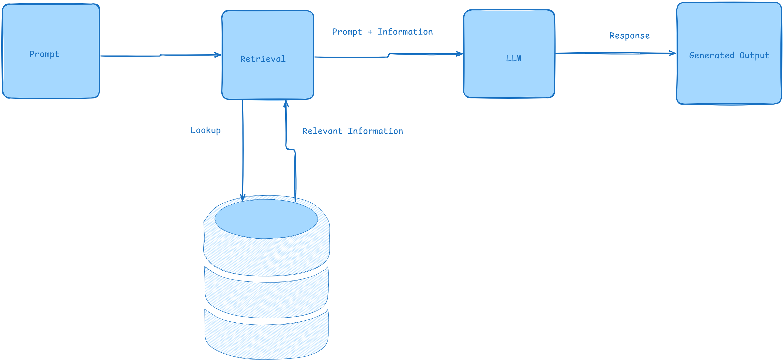

Artificial Intelligence
An overview, and a deep dive into LLMs
Outline
- AI in a nutshell - what it is, a bit of history, the big definitions; supervised / unsupervised / reinforcement / generative
- Deep dive: how LLMs actually work - tokens, embeddings, transformers, attention; parameters, context window, KV cache, temperature, quantization; training and limits
- Putting LLMs to work - system prompt, context, tools, RAG, MCP, agents
- Live demo + Q&A

What is AI?
Systems or machines that can simulate human intelligence.
- Learning from data (machine learning)
- Reasoning to solve problems
- Understanding language (natural language processing)
- Perceiving the world (computer vision)
- Acting autonomously (virtual agents)
Definitions
- Artificial Intelligence (AI): creating machines that simulate human intelligence.
- Machine Learning (ML): systems that learn from data and improve over time without explicit programming.
- Neural Networks (NNs): models inspired by the human brain, used for pattern recognition.
- Deep Learning (DL): ML using multi-layered neural networks to model complex patterns.
- Generative AI (GenAI): AI that creates new content - text, images, audio.
- Large Language Models (LLMs): GenAI models specialized in human language.

The Types of Machine Learning
| Supervised | Unsupervised | Reinforcement |
|---|---|---|
| Learns from labeled data | Finds patterns in unlabeled data | Learns by trial, reward, penalty |
| Predicts outcomes for new inputs | Groups and structures data on its own | An agent acts inside an environment |
| Spam filters, price prediction | Customer segments, anomaly detection | Game AI, robotics, self-driving |
Generative AI is the fourth flavor - instead of classifying, it creates. That is where LLMs live.
How LLMs Work
The deep dive
Generative AI
- Creates new content - text, images, audio - by learning patterns from existing data.
- A language model does one thing, over and over: predict the next token given everything before it.
- Do that billions of times on most of the internet, and "predict the next word" turns into writing, translating, and coding.
Watch it predict the next token
Stateless & recursive: every click re-reads the entire sentence so far.
Tokens & Tokenization
LLMs don't read words or letters - they read tokens.
- A token is a chunk of text, roughly ¾ of a word (~4 characters).
- "tokenization" might split into
token+ization; rare words and code split into more pieces. - Context limits and pricing are measured in tokens, not words.
Try it live: platform.openai.com/tokenizer
Embeddings
Every token becomes an embedding: a vector of numbers that captures meaning.
Similar meanings land close together: this is what powers semantic search and RAG.
Embedding models & dimensions
An embedding model turns text into a fixed-length 1 × N array of floating-point numbers.
"Bugün hava güzel" → [ 0.021, -0.184, 0.77, …, 0.043 ]
a 1 × 768 vector (nomic-embed-text)
| Model | Dimensions | Notes |
|---|---|---|
| nomic-embed-text | 768 | open source, runs locally |
| all-MiniLM-L6-v2 | 384 | tiny & fast (sentence-transformers) |
| bge-large-en | 1024 | strong open model |
| OpenAI text-embedding-3-small | 1536 | hosted API |
| OpenAI text-embedding-3-large | 3072 | highest quality, hosted |
More dimensions = more nuance, but more storage and slower search. These vectors live in a vector database (e.g. Chroma) for semantic search.
Meaning becomes math
Because words are vectors, you can add and subtract their meanings.
Transformers & Attention

The Transformer is the architecture behind every modern LLM (the 2017 paper "Attention Is All You Need", Vaswani et al.).
- Processes all tokens in parallel → fast on GPUs (it replaced sequential RNNs).
- Built from stacked layers; the key ingredient is self-attention.
- Attention: every token looks at every other token and weighs how relevant it is, capturing context and long-range meaning.
- "...because it was tired" → attention links it → animal.
Parameter Size
Parameters are the learned weights - the knobs tuned during training.
- Sizes you'll hear: 8B, 70B, 405B+ (billions of parameters).
- More parameters ≈ more capacity and knowledge, but more compute, memory, and cost.
- The weights must sit in memory: a 70B model in 16-bit ≈ 140 GB of GPU memory just to load.
Context Window
The max tokens the model can consider at once: its working memory. When it fills up, the oldest tokens fall out.
KV Cache - why memory is expensive
For each token the model checks the cache: if its key/value is already there it is a hit (reuse it); if not, a miss (compute it, then store it).
Real numbers: Gemma 3 4B
Weights stay fixed, but the KV cache grows with the context window.
| Context used | Weights | KV cache | Total memory |
|---|---|---|---|
| 4K tokens | ~8 GB | ~0.8 GB | ~9 GB |
| 16K tokens | ~8 GB | ~3 GB | ~11 GB |
| 32K tokens | ~8 GB | ~6 GB | ~14 GB |
| 128K tokens | ~8 GB | ~26 GB | ~34 GB |
KV figures are rough fp16 estimates; Gemma 3's sliding-window attention reduces them in practice.
Hosting the big ones
Gemma 4B fits on one GPU. Frontier models are far bigger, handle ~1M-token context, and serve millions of users at once.
 ChatGPT
ChatGPT
 Claude
Claude
 Gemini
Gemini
Every long conversation needs its own KV cache, so a huge GPU fleet runs in parallel. Figures are orders of magnitude; exact numbers are undisclosed.
Temperature - the "heat" of an LLM
A knob that controls randomness when picking the next token. Drag it:
Quantization
Storing the weights at lower precision to save memory.
- 16-bit → 8-bit → 4-bit: roughly halve, then quarter the memory.
- Small quality loss, big savings - run a model that needed a server on a laptop or one GPU.
- Shrinks both the weights and the KV cache → the payoff to the cost problem.
How LLMs Are Trained
Three stages turn raw text into a helpful assistant.
- Pretraining - predict the next token across enormous text. Slow, expensive (months, millions of dollars). Produces raw knowledge.
- Fine-tuning (SFT) - train on curated instruction/answer examples so it follows instructions.
- RLHF - humans rank answers; the model is tuned to prefer the helpful, safe ones.
Limitations - keep these in mind
- Hallucinations - confidently states things that are false.
- Knowledge cutoff - doesn't know events after its training data.
- No real understanding - it predicts patterns; it doesn't verify truth.
- Weak at exact math / counting, and it inherits bias from its data.
"How many r's in strawberry?"
Putting LLMs to Work
Prompting & the System Prompt
- Prompt = the instructions and question you send the model.
- System prompt = hidden top-level instructions that set the model's role, rules, and persona for the whole conversation.
- Good prompting = be clear, give examples, state constraints and the output format.
Context
LLMs are stateless - they only know what's in the current context window.
- Every call you assemble: system prompt + conversation history + retrieved docs + tool outputs.
- Deciding what to include is context engineering.
- Garbage in → garbage out; the right context often matters more than the model.
Tools / Function Calling
An LLM can only produce text - tools give it hands.
- You describe functions it can call (search, calculator, database, any API).
- The model outputs a structured call → your code runs it → the result goes back into context.
- This loop is the foundation of agents.
What we actually send the model
System prompt and tools go on every call. Messages reset on a new session.
Retrieval Augmented Generation (RAG)
Combine retrieving relevant info from external sources with generating a natural-language answer - for more accurate, grounded responses.

Model Context Protocol (MCP)
An open standard (Anthropic, 2024) for connecting AI apps to external tools and data - the USB-C port for AI.
- An MCP server wraps a tool or data source (files, GitHub, a database, Slack…).
- An MCP client is the AI app (an IDE, Claude Code, your agent) that connects to it.
- Build a connector once → every MCP-compatible app can use it.
Agents
AI systems that autonomously perceive their environment, reason, and take actions to achieve a goal - often using chain-of-thought reasoning.
Agents & the Harness
An agent runs an LLM in a loop: think → act (use a tool) → observe → repeat until the goal is done.
The model is just the brain. The harness is everything wrapped around it that makes it actually work:
- the loop - keeps calling the model until the task is finished
- tools - search, code execution, APIs, your MCP servers
- context & memory - decides what to feed the model each call
- permissions & safety - what the agent is allowed to do
Model = the engine; harness = the whole car. Same model + a better harness = very different results. Examples: Claude Code, Codex, opencode, OpenClaw.
Demo: Booking a Flight with MCP
We connect Claude Code to our flight-booking MCP server.
- The MCP server exposes search_flights, get_offer, book_flight, get_ticket as tools
- Claude Code connects to it as an MCP client
- We ask in plain language → the agent searches, offers, and books a flight
Q&A
Resources
- A brief history of AI - medium.com/@lmpo
- AI overview - medium.com/womenintechnology
- How LLMs work (video) - youtube.com/watch?v=LPZh9BOjkQs
- Attention Is All You Need (2017) - arxiv.org/abs/1706.03762
- Model Context Protocol - modelcontextprotocol.io